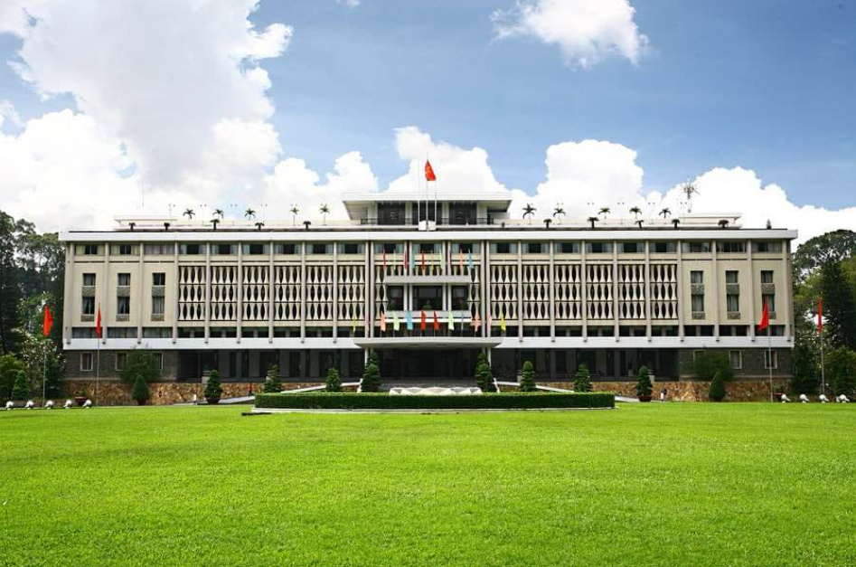
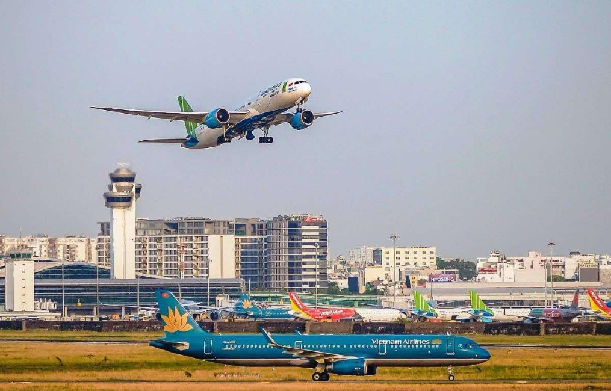

Dinh Độc Lập
Vị trí: Trung tâm TP. Hồ Chí Minh
Ý nghĩa: Là nơi đặt cơ quan đầu não của chính quyền Sài Gòn. Khi xe tăng quân Giải phóng húc đổ cổng Dinh Độc Lập vào trưa 30/4/1975, chính quyền Sài Gòn tuyên bố đầu hàng vô điều kiện, đánh dấu sự kết thúc của cuộc chiến.

Sân bay Tân Sơn Nhất
Vị trí: Quận Tân Bình, TP. Hồ Chí Minh
Ý nghĩa: Là đầu mối giao thông quân sự quan trọng bậc nhất của chính quyền Sài Gòn, nơi tiếp nhận viện trợ từ Mỹ. Quân ta đã tấn công quyết liệt và kiểm soát sân bay, cắt đứt đường tiếp tế và tháo chạy của đối phương.
